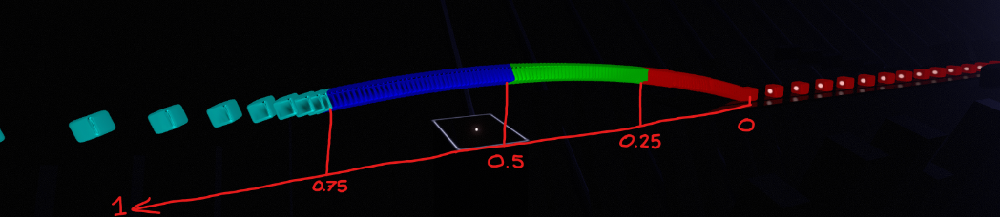

Tracks and Points
Tracks and point definitions are integral to Heck's animation systems and are used for animating anything using Heck.
Tracks
Tracks are a powerful tool integrated by Heck that allow you to group objects together and control them. Tracks hold information in the form of properties, then anything on the track can use that information to control, for example, their position or rotation.
track is a string property in the customData of the object you want to give said track to. It can be placed on any object in the obstacles, colorNotes, bombNotes, sliders, or burstSliders arrays. An object can belong to multiple tracks at the same time, and be affected by multiple track animations or path animations concurrently.
Example
This example will add the note to the ExampleTrack track. These tracks are a way of identifying which objects that the custom events should affect.
Point Definitions
Point definitions are used to describe what happens over the course of an animation, they are used slightly differently for different properties. They consist of a collection of points over time.
Here is an example of one being defined to animate offsetPosition: (See: AnimateTrack)
{
"b": 3.0,
"t": "AnimateTrack",
"d": {
"track": "ZigZagTrack",
"duration": 1,
"offsetPosition": [
[0, 0, 0, 0],
[1, 0, 0, 0.25],
[-1, 0, 0, 0.75],
[0, 0, 0, 1]
]
}
}
A point definition usually follows the pattern of [data, time, optional easing, optional spline],
- Data can be multiple points of data, this part of a point varies per property,
- Time is a float from 0 - 1, points must be ordered by their time values
- "optional easing" is an optional field, with any easing from easings.net (with the addition of
easeLinearandeaseStep). This is the easing that will be used in the interpolation from the last point to the one with the easing defined on it. - "optional spline" is an optional field, with any spline implemented, currently only
"splineCatmullRom". It acts like easings, affecting the movement from the last point to the one with the spline on it. Currently only positions and rotations support splines.
Example
Splines and easings being used
Warning
Point definitions are strict in the amount of points you provide them, i.e. you must provide them the exact amount of values they expect. For example, when animating a color, a point must have 5 numbers total, RGBA and time. Any less or any more will cause an error.
Point definitions can also be defined inside the pointDefinitions field of your customData, any point definition defined here can be called via their property name when one would fit.
Example
{
"version": "3.0.0",
"customData": {
"pointDefinitions": {
"ZigZagPosition": [
[0, 0, 0, 0],
[1, 0, 0, 0.25],
[-1, 0, 0, 0.75],
[0, 0, 0, 1]
]
},
"customEvents": [
{
"b": 3.0,
"t": "AnimateTrack",
"d": {
"track": "ZigZagTrack",
"duration": 1,
"offsetPosition": "ZigZagPosition"
}
}
]
},
"events": [],
"notes": [],
"obstacles": []
}
When a point definition is used, input time values outside of the defined points' times will automatically clamp to the first and last values respectively.
Example
The scale of this note will be 2x up until 0.5, after which it will begin scaling down to 1x until 0.8, then the note will remain at 1x.
Tip
If you only require one element in your point definition, instead of a list of points, your point definition can just be your point. Heck will automatically add a time of 0 for you.
Path Animation
Path animations define how an object is animated over its own individual lifetime. For path animations, the time value of the point definition is the point each object on the track is at in its individual life span.
Meaning a point with time 0 would be right when the object finishes jumping in, a point with time 0.5 would be when the object reaches the player, at 0.75, walls and notes will begin their despawn animation and start flying away very quickly, and 1 being right when the object despawns.

Note
Objects cannot be animated while they are in their jumping animation. During that time, they will instead strictly use the first point in the point definition.
Individual path animations
Path animations can individual be assigned to an object by adding the animation data in the customData.
This will apply a path animation to the single object. Will overwrite any path animation assigned through AssignPathAnimation
Example
Events
These custom events are the primary ways of animating.
AnimateTrack
{
"b": float, // Time in beats.
"t": "AnimateTrack",
"d": {
"track": string/string[], // The track(s) you want to animate.
"duration": float, // The length of the event in beats (defaults to 0).
"easing": string, // An easing for the animation to follow (defaults to easeLinear).
"property": point definition, // The property you want to animate.
"repeat": int // How many times to repeat this event (defaults to 0)
}
}
AnimateTrack will animate the properties of everything on the track at the same time. The animation will go through the point definition over the course of duration.
Attempting to animate a property which is already being animated will stop the overwritten AnimateTrack. However, multiple AnimateTrack events may animate separate properties at the same time, i.e. one AnimateTrack could animate position over 10 beats while another AnimateTrack animates rotation over 5 beats.
Tip
Do not forget an object can be a part of multiple tracks, and therefore multiple AnimateTrack events could affect the same property on a single object by animating multiple tracks.
Although not recommended, properties can be set to null to "erase" a track's property (This obviously cannot have a duration). This will return that property to as if it was never set at all. This is highly not recommended because it cannot update active objects and can instead be done by setting the property to a default point definition. i.e. [[0,0,0,0]]
Example
All the objects on ZigZagTrack will be offset 1 unit to the right, then offset 1 units to the left, and then finally centered.
Warning
The track(s) being affected must exist. That is, the track must have at least one object on it, such as a note or a prefab. If the track does not exist, the event will error. This is true for any event which uses tracks, not just AnimateTrack.
AssignPathAnimation
{
"b": float, // Time in beats.
"t": "AssignPathAnimation",
"d": {
"track": string/string[], // The track(s) you want to animate.
"duration": float, // How long it takes to assign this path animation (defaults to 0).
"easing": string, // An easing for moving to the path animation (defaults to easeLinear).
"property": point definition // The property you want to assign the path to.
}
}
AssignPathAnimation will assign a "path animation" to all the objects on the track(s).
The duration and easing on the event additionally allows you to transition smoothly between paths.
Although not recommended, path properties can be set to null to "erase" a track's path property. This will return that path property to as if it was never set at all. It is highly not recommended because although usually you can interpolate from one path animation to another using duration, you cannot interpolate from nor to null.
Example
During their jump animation, the objects will be 40 units high. Once their jump animation is complete, the object will then start descending.
Modifiers
Modifiers are added at the end of points to allow you to do basic arithmetic on points. How these modifiers interact can be defined using operations, all of which are done componentwise. These include:
opNoneopAddopSubopMulopDiv
Example
Modifiers can perform basic arithmetic.
A point can also have multiple modifiers and modifiers be chained to specify your order of operations.The true value of modifiers are useful when using base properties which allow referencing some provided values which updates dynamically. This allows for things like following the HMD or setting an object's color to the player's note color. All base properties start with the 'base' prefix.
Example
The first event takes the color of left hand notes, then multiplies their rgb values by 0.4.
The second event just uses the right hand note color.
Bases
Base properties represent a set amount of values and are continously updated.
Bases will only evaluate when their value is grabbed.
Example
{
"b": 5,
"t": "AnimateTrack",
"d": {
"track": "tutorialnote0",
"duration": 0, // will snapshot the head's rotation when this event fires.
"localRotation": ["baseHeadRotation"]
}
},
{
"b": 5,
"t": "AnimateTrack",
"d": {
"track": "tutorialnote1",
"duration": 999, // will continue to follow the head's rotation for 999 beats.
"localRotation": ["baseHeadRotation"]
}
}
Player Transform
baseHeadPosition: [x, y, z]baseHeadLocalPosition: [x, y, z]baseHeadRotation: [x, y, z]baseHeadLocalRotation: [x, y, z]baseHeadLocalScale: [x, y, z]baseLeftHandPosition: [x, y, z]baseLeftHandLocalPosition: [x, y, z]baseLeftHandRotation: [x, y, z]baseLeftHandLocalRotation: [x, y, z]baseLeftHandLocalScale: [x, y, z]baseRightHandPosition: [x, y, z]baseRightHandLocalPosition: [x, y, z]baseRightHandRotation: [x, y, z]baseRightHandLocalRotation: [x, y, z]baseRightHandLocalScale: [x, y, z]
Color
baseNote0Color: [x, y, z, w]baseNote1Color: [x, y, z, w]baseObstaclesColor: [x, y, z, w]baseSaberAColor: [x, y, z, w]baseSaberBColor: [x, y, z, w]baseEnvironmentColor0: [x, y, z, w]baseEnvironmentColor1: [x, y, z, w]baseEnvironmentColorW: [x, y, z, w]baseEnvironmentColor0Boost: [x, y, z, w]baseEnvironmentColor1Boost: [x, y, z, w]baseEnvironmentColorWBoost: [x, y, z, w]
Scoring
baseCombo: [x]baseMultipliedScore: [x]baseImmediateMaxPossibleMultipliedScore: [x]baseModifiedScore: [x]baseImmediateMaxPossibleModifiedScore: [x]baseRelativeScore: [x]baseMultiplier: [x]baseEnergy: [x]baseSongTime: [x]baseSongLength: [x]
Tip
You can get the current normalized song time by doing ["baseSongTime", [ "baseSongLength", "opDiv"]]
Parts
You can pick and choose individual components of bases to use by using .xyzw. For example, if you only wanted the z component of the head position, you can use baseHeadPosition.z, or if you wanted the xy components, you can use baseHeadPosition.xy. These values can be unordered and reused, e.g. baseHeadPosition.zzx.
Picking individual components of bases also allows using high dimension points in lower dimensional properties.
Example
baseHeadPosition is three dimensional, and dissolve is one dimensional, but by using .x, we get a one dimensional point.
Additionally these parts can be mixed and matched together to make complex points.
Example
Smooth
Bases can be smoothed between frames by using the .s[number] syntax. Lower values will be smoother than higher values, i.e. baseEnergy.s4 will be smoother than baseEnergy.s20. Additionally decimal numbers can be represented by replacing the period with an underscore, i.e. for a smoothness value of 0.4, use .s0_4.
Example
Smoothly track the HMD. Used to achieve the HUD effect in End Times and Through the Screen.
Tip
Both parts and smoothing can be used in conjunction with each other, e.g. baseHeadPosition.xzy.s2.